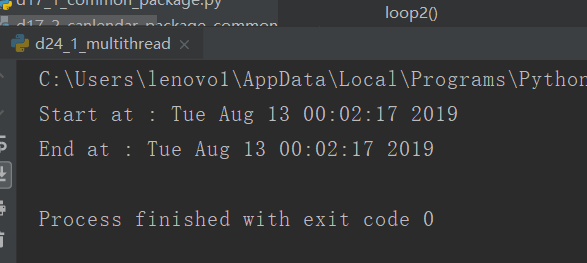

原文出处:本文由博客园博主心悦君兮君不知-睿提供。
原文连接:https://www.cnblogs.com/ruigege0000/p/11343453.html
原文连接:https://www.cnblogs.com/ruigege0000/p/11343453.html
一、多线程
1.我们的环境
（1）xubuntu 16.04（2）anaconda（3）pycharm（4）python 3.6
2.程序：一堆代码以文本的形式存入一个文档
3.进程：程序运行的一个状态。
特点：（1）其中包含地址控件、内存、数据栈等；（2）每个进程由自己完全独立的运行环境，多进程共享数据是一个问题。
4.线程：一个进程的独立运行片段
特点：（1）一个进程可以有多个线程；（2）轻量化的进程；（3）一个进程的多个线程间共享数据和上下文运行环境；（4）共享互斥问题
5.全局解释器锁（GIL）
（1）Python代码的执行是由python虚拟机进行控制
（2）在主循环中只能有一个控制线程在执行
6.python包
（1）thread:有问题，不好用，python3改为_thread
（2）threading:通行的包
7.例子：
import threading,time
import _thread as thread
#利用time生成两个函数
def loop1():
print("Start loop 1 at:",time.ctime())
time.sleep(4)
print("End loop 1 at :",time.ctime())
def loop2():
print("Start loop 2 at :",time.ctime())
time.sleep(2)
print("End loop 2 at :",time.ctime())
def main():
print("Start at :",time.ctime())
thread.start_new_thread(loop1,())#这里里面的第二个位置是用来传递参数的，因为咱们的函数刚好没有参数，因此咱们传递了一个空参数
thread.start_new_thread(loop2,())
print("End at :",time.ctime())
if __name__ == "__main__":
main()
解释：如上图的运行结果：按照顺序输出开始时间，然后应该是线程1，线程2，最后是结束时间，从运行结果来看，现在只有开始时间以及结束时间，中间那两个线程都没了，这是因为，我们让这两个线程开始执行的时候我们的主线程已经之行结束了，导致中间两个线程都没有执行完，主线程终止了，所有中间的两个线程也结束了。优秀！！
二、源码
d24_1_multithread.py
地址：https://github.com/ruigege66/Python_learning/blob/master/d24_1_multithread.py
2.CSDN：https://blog.csdn.net/weixin_44630050（心悦君兮君不知-睿）
3.博客园：https://www.cnblogs.com/ruigege0000/
4.欢迎关注微信公众号：傅里叶变换